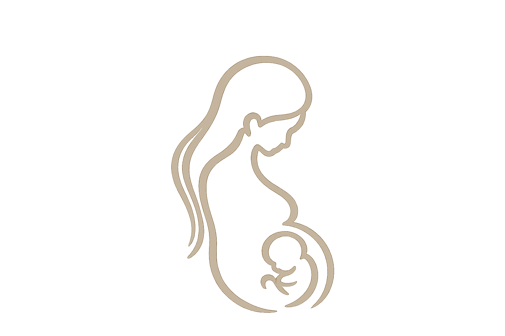
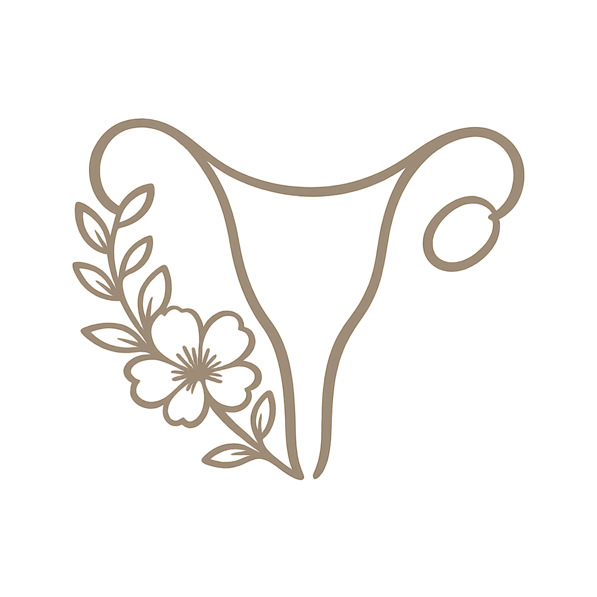
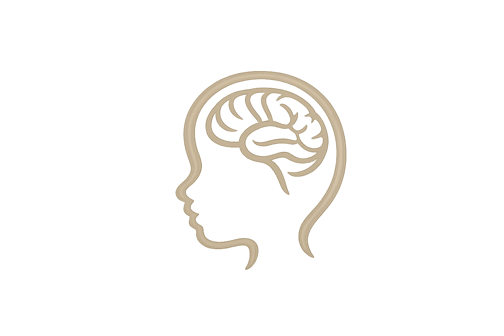

מגוון שירותי אולטרסאונד מתקדמים במיילדות וגינקולוגיה,בסטנדרטים הגבוהים ביותר וביחס אישי ומקצועי.

ליווי אולטרסאונד מקצועי לאורך ההריון, מהבדיקות הראשונות ועד להערכה מתקדמת של התפתחות העובר.

בדיקות אולטרסאונד להערכת הרחם, השחלות והאגן, לצורך אבחון ומעקב מדויק.

הערכה ממוקדת ומעמיקה של מוח העובר, מתוך מומחיות ייחודית ודיוק אבחוני.